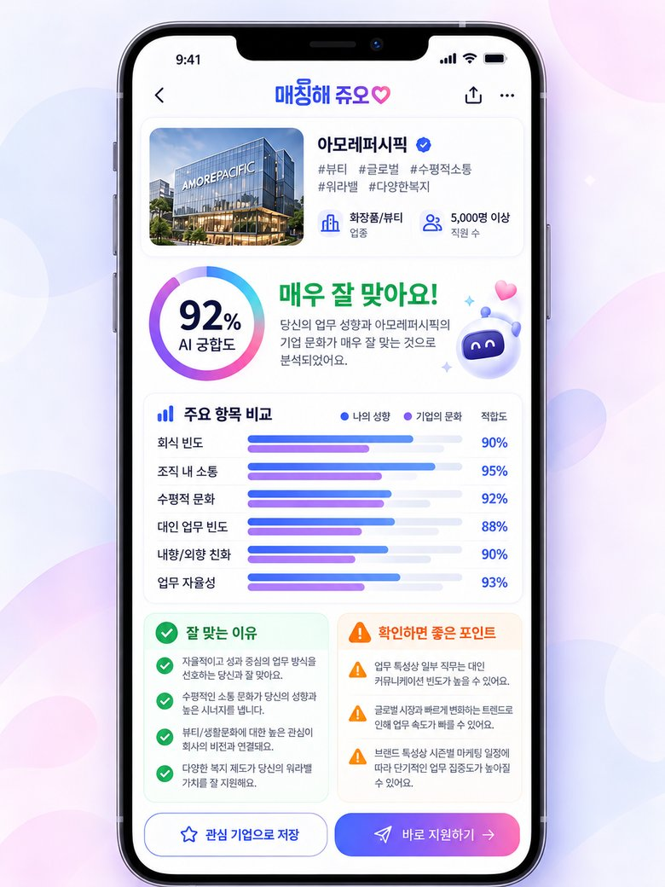
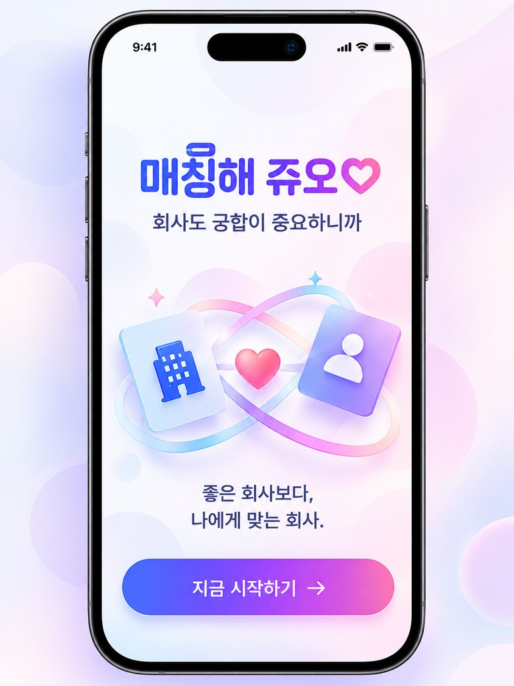
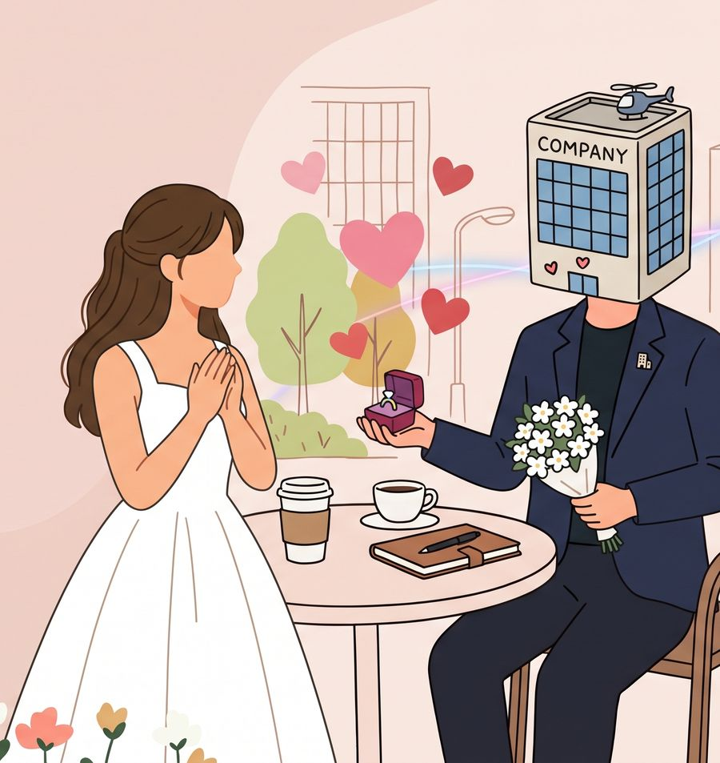

92%
AI 궁합 리포트 · 예시
오로라랩스와 매우 잘 맞아요
나의 선호기업 문화
현직자 38명 응답개발·디자인 직군2026년 9월 조사(예시 수치)
매칭해 쥬오는 구직자의 업무 성향과 현직자가 평가한 실제 기업문화를 AI로 비교해요. 좋은 회사보다, 나에게 맞는 회사를 찾도록 돕는 양방향 채용 매칭 플랫폼이에요.

재직이 인증된 현직자의 익명 설문으로 회식, 소통, 자율성을 보여줘요.
나도 기업을 고르고, 기업도 나를 골라요. 둘 다 관심을 보내면 매칭돼요.
궁합 점수와 함께 잘 맞는 점, 확인할 점을 항목별로 알려줘요.
사진을 눌러 매칭해 쥬오가 바꾸는 장면을 하나씩 보세요.
선호하는 업무 환경을 고르고, 추천 카드를 O / X로 넘겨 보세요. 카드는 드래그해서 넘길 수도 있어요.
5단계 중 원하는 쪽으로 옮겨 주세요.
체험에 나오는 기업은 모두 가상 기업이며, 점수와 설문 수치는 예시예요.
재직이 인증된 현직자의 익명 설문을 모아요. 가능한 경우 부서·직무별로 나누고, 응답 인원과 조사 시점을 함께 표시해요.
궁합 점수는 합격률이 아니에요. 나의 업무환경 선호와 기업문화 데이터가 얼마나 일치하는지를 보여주는 지표예요.
시작 화면부터 매칭 완료까지 10개 화면을 순서대로 넘겨 보세요. 데모 버전의 화면 시안이에요.

궁합을 계산하는 기준과 원칙을 숫자로 정리했어요.
공고만 올리고 기다리지 않아요. 직무 요건과 업무환경 선호가 맞는 인재에게 먼저 관심을 보낼 수 있어요.
채용공고, 직무 요건, 근무제도, 조직문화 정보를 등록해요.
이력서 공개에 동의한 지원자 중 직무와 환경 선호가 맞는 인재를 추천해요.
기업과 구직자가 서로 관심을 표시하면 매칭이 성사돼요.
매칭된 인재와 채팅하고, 면접 제안과 지원 상태를 관리해요.
기업은 성향 진단 원본 응답이나 비공개 정보를 볼 수 없어요. 열람과 채팅은 구직자 동의 후에만 열려요.
궁합은 재미있게, 채용은 공정하게. 매칭해 쥬오가 지키는 기준이에요.

현직자 인증, 응답자 수, 조사 시점, 직무별 차이를 함께 보여줘요.
설문과 선호 조건으로 점수를 내고, 추천 이유를 항목별로 공개해요.
내향성·외향성 같은 성격 특성을 합격이나 탈락의 근거로 쓰지 않아요.
이력서 공개, 기업 열람, 채팅 연결마다 명시적으로 동의를 받아요.
기본 진단과 추천은 무료예요. 더 깊은 리포트와 현직자 대화가 필요할 때 PLUS나 PRO로 업그레이드하세요.
궁합 확인을 처음 시작할 때
언제나 무료
무료로 시작하기여러 회사를 꼼꼼히 비교하고 싶을 때
매월 결제 · 언제든 해지
PLUS 시작하기본격적으로 지원하고 합격까지 준비할 때
매월 결제 · 언제든 해지
PRO 시작하기| 기능 | FREE | PLUS | PRO |
|---|---|---|---|
| 업무 성향·기업문화 선호 진단 | |||
| 기업 추천 스와이프 | 하루 20개 | 무제한 | 무제한 |
| AI 궁합 점수 | |||
| AI 궁합 리포트 | 요약 | 항목별 비교·추천 사유 | 항목별 비교·추천 사유 |
| 관심 기업 저장 | 5곳 | 무제한 | 무제한 |
| 넘긴 카드 되돌리기 | — | ||
| 지역·직무·문화 상세 필터 | — | ||
| 현직자 채팅 | — | 월 5회 | 무제한 |
| 부서·직무별 상세 문화 데이터 | — | — | |
| AI 이력서 작성·첨삭 | — | — | |
| 내 프로필 열람 기업 알림 | — | — | |
| 지원 현황 관리 대시보드 | — | — | |
| 고객지원 | 일반 | 일반 | 우선 응대 |
표시된 가격은 출시 전 예정 가격(부가세 포함)이며 바뀔 수 있어요. 궁합 점수와 PRO 기능은 채용 합격을 보장하지 않아요.
출시 소식과 베타 초대를 이메일로 보내 드려요.